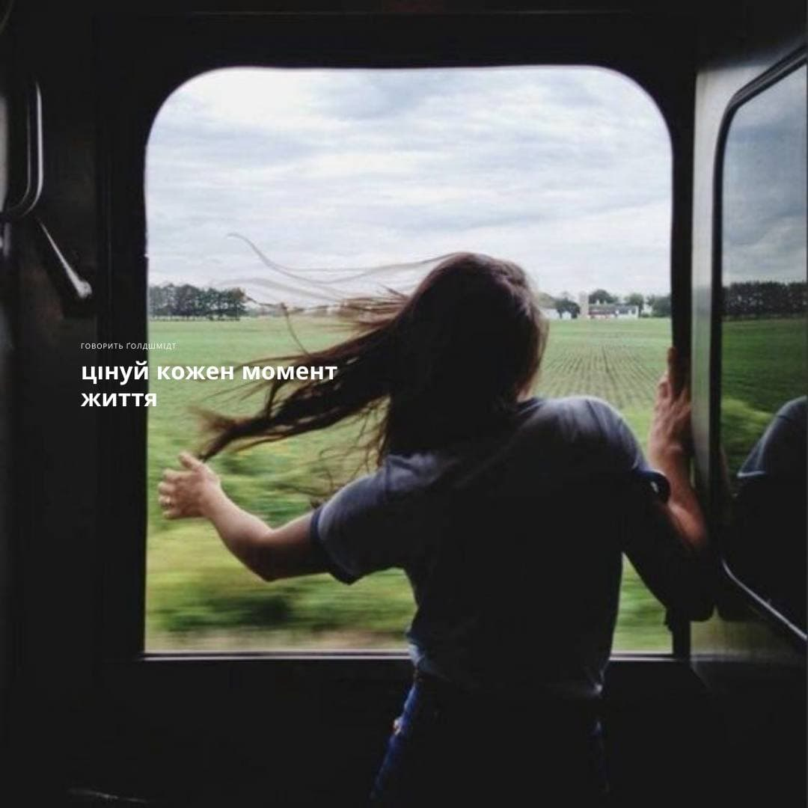
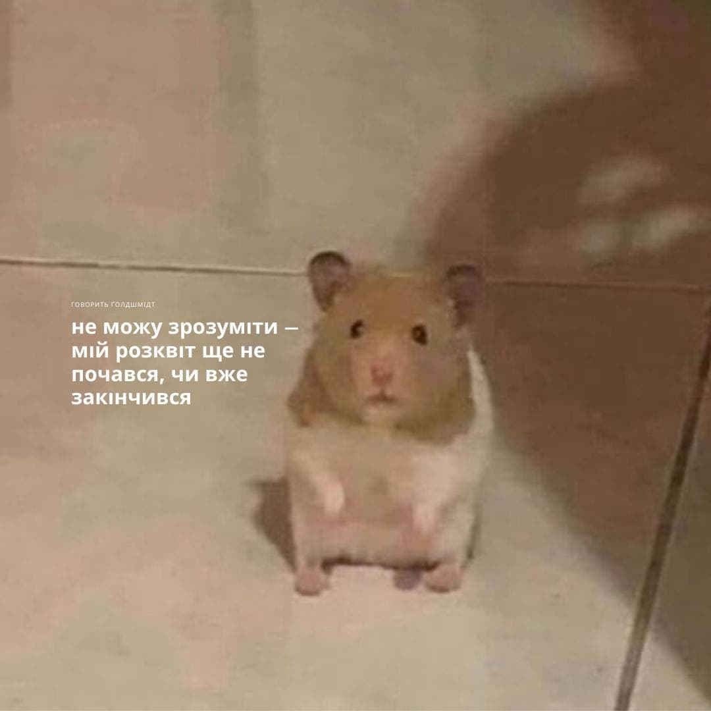

Мой любимый проект
Совмесными усилиями нескольких человек, в том числе и меня, был создан канал в Телеграме, первоначально предназначавшийся для развлекательного
контента и личных целей. После некоторого времени он набрал некоторое количество подписчиков и было принято решение продвигать наш проект в массы. После были созданы
и другие страницы (например, в Инстаграме). Сам проект несёт сатирически-развлекательный характер в формате цитат и высказываний, которые авторы сочли так или
иначе подходящими под тематику проекта. Название проекта — "Говорить Ґолдшмідт".
Telegram — кроссплатформенный мессенджер с функциями VoIP, позволяющий обмениваться текстовыми, голосовыми
и видеосообщениями, стикерами и фотографиями, файлами многих форматов. Также можно совершать видео- и аудиозвонки, организовывать конференции, многопользовательские группы и каналы.
Каналы в Telegram — это практически публичная страница в Facebook или «ВКонтакте», но с некоторыми особенностями. В отличие от социальной сети, каналы: висят в общем списке диалогов,
а не выделены в отдельную ленту новостей; «пушат» уведомлениями о новых записях, которые, естественно, можно отключить
Ниже приведено несколько примерников создаваемого нами контента:

